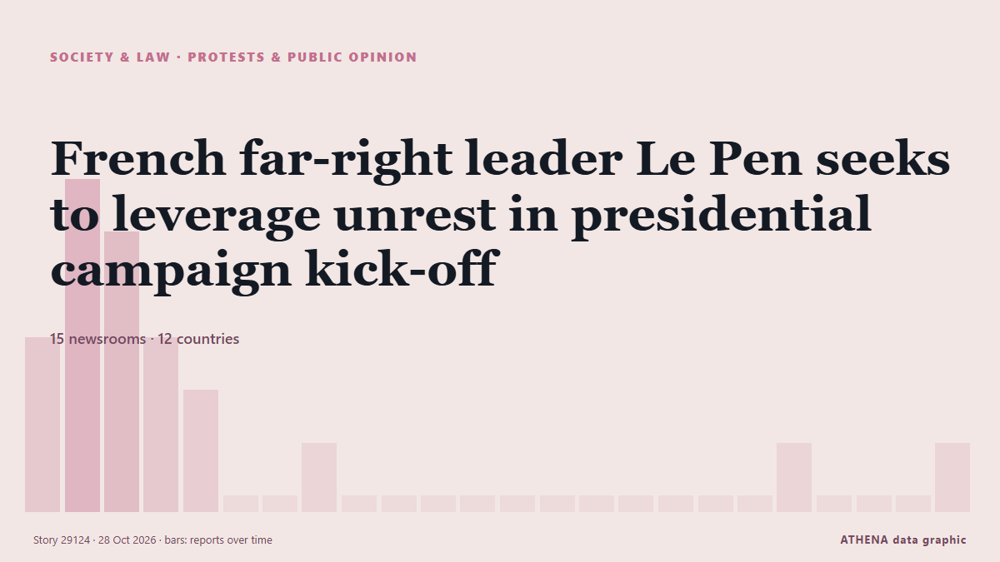

French far-right leader Le Pen seeks to leverage unrest in presidential campaign kick-off

Marine Le Pen, leader of France’s far-right National Rally, is set to address some 10,000 supporters on Sunday in the city of Orleans as she kicks off her presidential campaign, a day after… von France 24 English
Unabhängig gemeldet von 15 Medien in 12 Ländern seit dem 25. Okt., zuerst von France 24 English; die Berichterstattung ist abgeklungen. ATHENA stuft das Risiko als mäßig ein (3.6/10), vor allem wegen der Schwere des beschriebenen Schadens und seiner geografischen und sektoralen Reichweite. Die Konfidenz liegt bei 86 % (hoch): 15 Medien bestätigen es unabhängig, bei einer mittleren Verlässlichkeit der Quellen von 76 %. Medien nach Land: Frankreich (11), Saudi-Arabien (2), Oman (1). Berichterstattung: 25. Okt. bis 28. Okt., 70 Stunden.
Warum es wichtig ist: Rechtliche und politische Änderungen verändern Rechte, Pflichten und öffentliche Leistungen für die Betroffenen.
Was sich geändert hat: 2 neue Berichte von 2 Redaktionen in den 24 Stunden bis 28. Okt..
Schlagzeilen werden auf Englisch angezeigt, wie veröffentlicht.
Auf einen Blick
Ausgewählt, bewertet und geschrieben nach der veröffentlichten Methodik von ATHENA. Kein Redakteur greift in einzelne Ereignisse ein. So entsteht ATHENA ›
| 25 Oct 09:31 UTC | 3 |
|---|---|
| 25 Oct 12:31 UTC | 6 |
| 25 Oct 15:31 UTC | 5 |
| 25 Oct 18:31 UTC | 3 |
| 25 Oct 21:31 UTC | 2 |
| 26 Oct 00:31 UTC | 0 |
| 26 Oct 03:31 UTC | 0 |
| 26 Oct 06:31 UTC | 1 |
| 26 Oct 09:31 UTC | 0 |
| 26 Oct 12:31 UTC | 0 |
| 26 Oct 15:31 UTC | 0 |
| 26 Oct 18:31 UTC | 0 |
| 26 Oct 21:31 UTC | 0 |
| 27 Oct 00:31 UTC | 0 |
| 27 Oct 03:31 UTC | 0 |
| 27 Oct 06:31 UTC | 0 |
| 27 Oct 09:31 UTC | 0 |
| 27 Oct 12:31 UTC | 0 |
| 27 Oct 15:31 UTC | 0 |
| 27 Oct 18:31 UTC | 1 |
| 27 Oct 21:31 UTC | 0 |
| 28 Oct 00:31 UTC | 0 |
| 28 Oct 03:31 UTC | 0 |
| 28 Oct 06:31 UTC | 1 |
| 25 Oct 09:34 UTC | 0.0 |
|---|---|
| 25 Oct 12:46 UTC | 2.0 |
| 25 Oct 13:07 UTC | 3.7 |
| 25 Oct 15:08 UTC | 3.4 |
| 25 Oct 19:40 UTC | 4.1 |
| 25 Oct 19:59 UTC | 3.3 |
| 25 Oct 22:00 UTC | 4.1 |
| 28 Oct 07:07 UTC | 3.6 |
Warum diese Zahlen
Bedeutung
Risiko
Konfidenz
Die Berichterstattung – wer berichtete, und wann
Schlagzeile wie veröffentlicht · öffnet das Original- France 24 English · FrankreichFrance’s far right gathers as Le Pen prepares her presidential campaign
- France 24 English · FrankreichFar-right leader Le Pen says visible policing keeps protests smooth
- Oman Observer · OmanIn week of French protests, Le Pen kicks off campaign
- Jamaica Observer · JamaikaFar-right leader Le Pen kicks off presidency tilt in wake of France protests
- Bangkok Post — page reader · ThailandFar-right leader Le Pen kicks off tilt at French presidency amid nationwide protests
- France 24 English · FrankreichFrance: Le Pen launches presidential campaign in Orleans
- France 24 English · FrankreichLe Pen leads polls with up to 38% six months before election
- Euractiv · BelgienLe Pen kicks off presidential push amid France unrest
- France 24 English · FrankreichFrench far-right leader Le Pen seeks to leverage unrest in presidential campaign kick-off
- France 24 English · FrankreichFrench far-right leader Le Pen kicks off presidential campaign
- France 24 English · FrankreichFrance: Le Pen seeks to leverage unrest in presidential campaign kick-off
- The Straits Times · SingapurFrance’s far-right leader Marine Le Pen launches presidential bid as protests rattle the nation
- RFI English · FrankreichLe Pen promises French ‘rebirth’ as far-right RN sets sights on 2027 presidency
- RTÉ News · IrlandFrance's Le Pen vows to restore 'rule of law' if elected
- Anadolu Agency (English) · TürkeiMarine Le Pen vows to restore 'rule of law' in France if elected president
- Daily Maverick · SüdafrikaFrance’s Le Pen launches presidential bid as protests rattle the nation
- France 24 English · FrankreichMarine Le Pen launches presidential campaign in Orléans
- Al Jazeera English · KatarMarine Le Pen vows French ‘renaissance’ as far right eyes seat of power
- Arab News · Saudi-ArabienFrance’s Le Pen launches presidential bid vowing to restore ‘rule of law’
- The Local France · FrankreichFrance's Le Pen launches presidential bid vowing to restore 'rule of law'
- Arab News · Saudi-ArabienFrench media protest manhandling of journalists at far-right party rally
- RFI English · FrankreichFrench media protest manhandling of journalists at far-right party rally